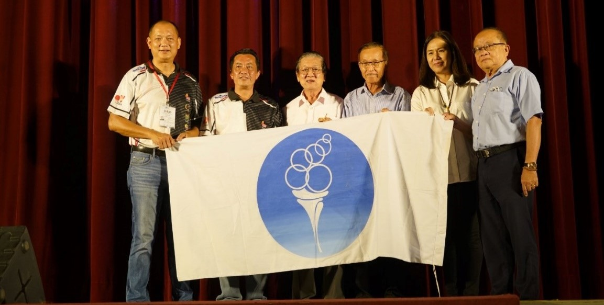

2022年第7届华教杯
2025年第8届华教杯将由槟威董联会接办，欢迎各校届时踊跃报名参与，延续发扬华教体育精神！第7届华教杯于2022年9月4日至6日，在吉打州双溪大年Amanjaya Sport Arena运动中心顺利进行。此活动是由董总主催，吉打州华校董事联合会主办，双溪大年新民独中承办，亚罗士打吉华独中和新民独中协办。
此次赛事共获得全国27个单位报名参加，其中羽球队有24队，乒乓队有11队，参赛总人数为383人，打破历届赛会参赛人数最高纪录，实在让人感到欣喜。
羽球和乒乓比赛的分组表如下：
乒乓团体赛
| A组 | B组 |
|---|---|
| 双溪大年新民独立中学 | 槟城锺灵独立中学 |
| 芙蓉中华中学 | 巴生兴华中学 |
| 沙巴崇正中学 | 新山宽柔中学 |
| 峇株华仁中学 | 宽柔中学古来分校 |
| 董总 |
羽球团体赛
| A组 | B组 | C组 | D组 |
|---|---|---|---|
| 峇株华仁中学 | 马六甲培风中学 | 永平中学 | 宽柔中学至达城分校 |
| 吉隆坡循人中学 | 董总 | 吉隆坡尊孔独立中学 | 双溪大年新民独立中学 |
| 古晋中华第三中学 | 亚罗士打吉华独立中学 | 大山脚日新独立中学 | 关丹中华中学 |
| E组 | F组 | G组 | H组 |
|---|---|---|---|
| 宽柔中学古来分校 | 芙蓉中华中学 | 麻坡中化中学 | 槟城锺灵独立中学 |
| 吉隆坡中华独立中学 | 亚罗士打新民独立中学 | 新纪元大学学院 | 笨珍培群独立中学 |
| 吉兰丹中华独立中学 | 新山宽柔中学 | 槟城韩江中学 | 古晋中华第一中学 |
董总主席陈大锦致开幕词时表示，除了重视学校各项业务的发展，自身也要建立和保持终身运动的良好习惯，不仅作为学生的榜样，更是能够缓解个人常年面对的工作压力和精神上的负担，有利于身体和心理的平衡。
除了传统的羽球和乒乓项目，今年还增设了“越野挑战”，让参与者都有机会摸“牌”，不会空手而归。
2022年第7届华教杯成绩如下：
| 奖杯 | 乒乓团体赛 | 羽球团体赛 |
|---|---|---|
| 冠军 | 槟城锺灵独立中学 | 宽柔中学古来分校 |
| 亚军 | 芙蓉中华中学 | 新山宽柔中学 |
| 季军 | 峇株华仁中学 | 槟城锺灵独立中学 |
| 殿军 | 巴生兴华中学 | 吉隆坡中华独立中学 |
大会主席暨吉打董联会主席庄俊隆在闭幕礼上，感谢所有参与本届华教杯的工作人员和参赛者，让这场赛事顺利举办。